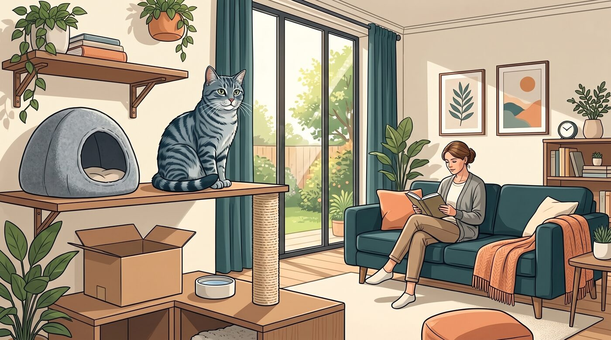
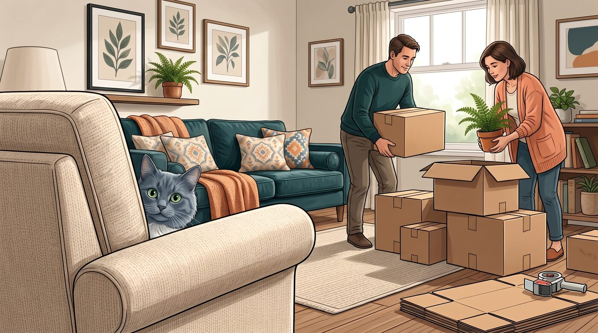
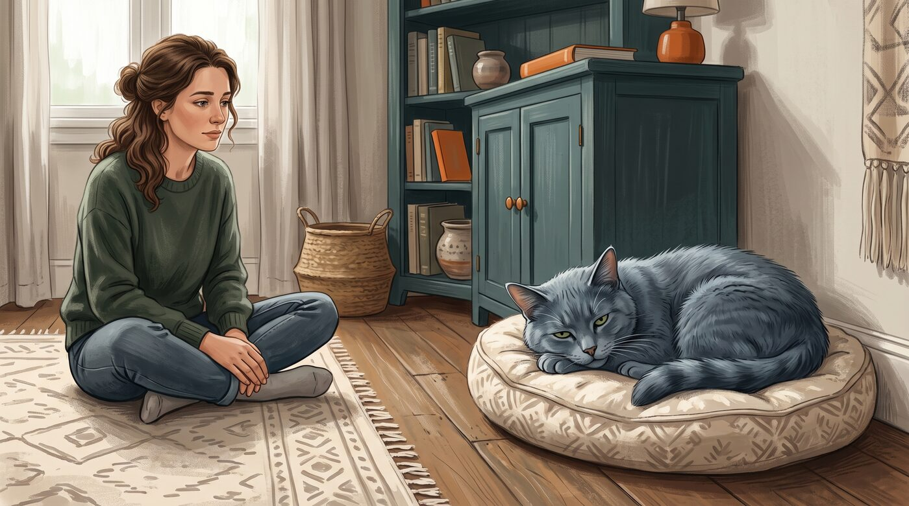
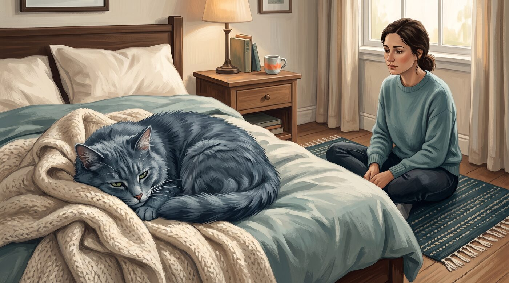
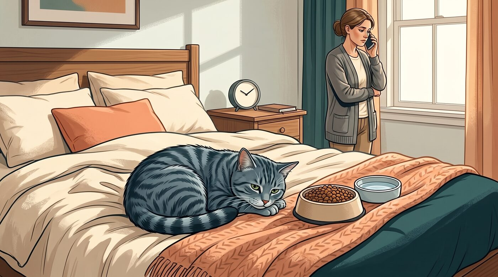
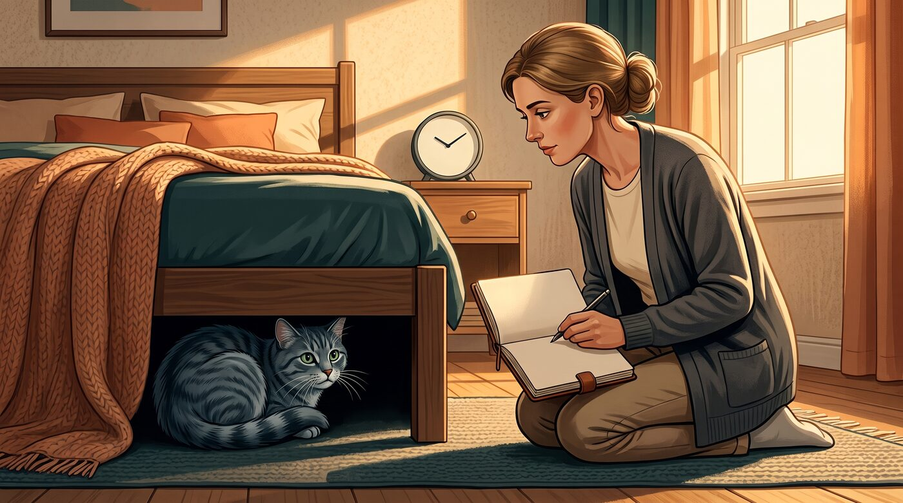

Tem gato que escolhe a parte de baixo da cama como escritório, quarto e refúgio oficial da casa. Ele aparece para comer, usar a caixa de areia, aceitar um carinho rápido e volta para o esconderijo sem que isso signifique um problema.
Mas a situação muda quando um gato que costumava dormir no sofá, acompanhar a família pela casa ou aparecer na cozinha de repente passa o dia inteiro atrás do guarda-roupa, debaixo da cama ou em um canto que nunca usava.
Nessas horas, eu não olharia apenas para o esconderijo. A pergunta mais importante é: ele sempre foi assim ou esse comportamento apareceu agora? Para gatos, uma mudança de rotina pode ser apenas resposta a medo e estresse — mas também pode ser um dos primeiros sinais de dor ou doença.
1. Se esconder faz parte do comportamento felino

Gatos precisam de locais seguros. Mesmo os mais sociáveis podem procurar uma caixa de papelão, uma prateleira alta, uma toca ou um canto quieto depois de uma visita em casa, uma brincadeira intensa ou simplesmente para descansar sem ser incomodados.
Isso acontece porque esconder-se é um comportamento natural de autoproteção. Em situações de desconforto ou insegurança, muitos gatos preferem diminuir o contato com pessoas, outros animais e movimentos da casa. A AAHA descreve que o estresse felino pode se manifestar desde ficar imóvel e escondido até tentar fugir de forma mais intensa.
Um gato reservado por natureza, que se alimenta bem, bebe água, usa a caixa de areia e continua aparecendo em seus horários habituais, pode estar apenas exercendo seu jeito de ser. Forçar a saída, puxá-lo do esconderijo ou insistir em contato costuma aumentar a sensação de insegurança.
O que importa não é comparar seu gato com um gato mais extrovertido da internet. O ponto é entender o padrão normal dele e perceber quando esse padrão muda.
2. Mudanças na casa podem fazer o gato desaparecer

Barulhos, visitas, obras, fogos, mudança de móveis, chegada de um bebê, outro pet, uma nova pessoa na casa ou até alterações na rotina de quem cuida dele podem fazer um gato procurar mais abrigo.
Imagine que você passou alguns dias fora, mudou o horário de trabalho ou começou a receber entregas e prestadores de serviço com frequência. Para nós, pode parecer uma mudança pequena. Para um gato que se orienta por território, cheiros e previsibilidade, isso pode alterar bastante a percepção de segurança.
A chegada de outro animal merece atenção especial. Mesmo quando não existe briga clara, um gato pode se sentir pressionado por disputas silenciosas: passagem estreita pelo corredor, acesso à caixa de areia, potes de comida, cama ou lugares altos. Ele pode se esconder para evitar encontros, não porque "não gosta mais" da família.
Se você identifica uma mudança recente, comece oferecendo segurança: preserve horários de alimentação, deixe água e caixa de areia acessíveis, disponibilize esconderijos adequados e não obrigue interações. Um local quieto, uma caixa com manta e uma prateleira alta podem ajudar o gato a retomar a confiança no próprio ritmo.
3. O que observar além do esconderijo

Quando um gato começa a se esconder mais, vale fazer uma observação simples da rotina. Não é preciso vigiar o animal o dia inteiro; basta prestar atenção nos sinais que costumam acompanhar um desconforto real.
Veja se ele está comendo a quantidade habitual, bebendo água, usando a caixa de areia, se limpando e reagindo a algo que normalmente chamaria sua atenção — um petisco, um brinquedo, o som do pote de ração ou sua chegada em casa.
Também repare em pequenas mudanças físicas. A VCA cita sinais como pelagem descuidada, postura encolhida, movimentos mais rígidos ou hesitantes, menor interesse pelas atividades habituais, esconder-se mais, alterações de apetite, sede, urina ou tempo gasto na caixa de areia.
Uma coisa que eu sempre observo é se o gato continua fazendo o que gostava de fazer. Ele ainda sobe no sofá? Pula na janela? Vem pedir comida? Se afasta quando você tenta pegá-lo? Esses detalhes contam mais do que o fato de ele ter passado uma tarde dentro de uma caixa.
Se puder, anote o dia em que começou, os horários em que ele sai do esconderijo e qualquer evento diferente que aconteceu em casa. Isso ajuda a perceber se há melhora, piora ou um padrão ligado a algum gatilho.
4. Estresse pode explicar, mas não deve encerrar a investigação

É tentador concluir que um gato escondido está apenas "emburrado" ou assustado. Às vezes, ele realmente está. Só que o estresse e a saúde física não são assuntos completamente separados.
Um gato com dor, náusea, febre, desconforto urinário ou dificuldade para se movimentar pode procurar um lugar quieto porque se sente vulnerável. Gatos têm tendência a disfarçar sofrimento, e ficar mais quieto ou recluso pode ser um dos primeiros sinais percebidos pelo tutor. A VCA ressalta que, nas fases iniciais de uma doença, o único indício pode ser justamente o animal parecer mais calado e afastado.
Problemas dentários, desconforto gastrointestinal, alterações urinárias, dor nas articulações e outras condições podem mudar o comportamento sem que exista um sinal óbvio à primeira vista. Isso não quer dizer que todo gato escondido esteja doente. Significa apenas que esconder-se sozinho não permite fechar uma conclusão.
Em gatos mais velhos, também vale observar se ele deixou de subir em móveis, passou a evitar escadas ou prefere ficar em locais baixos e quentes. A Cornell aponta que comportamento mais lento e recluso pode acompanhar problemas articulares, inclusive quando a alteração parece sutil.
Por isso, se o esconderijo aumentou e não existe uma explicação clara — ou se a mudança persiste mesmo depois de a casa voltar ao normal — uma avaliação veterinária é a escolha mais segura.
5. Quando a mudança merece mais atenção

Um gato tímido que se esconde quando chegam visitas e reaparece algumas horas depois pode estar reagindo de forma esperada. Já um gato habitualmente sociável que some por um dia inteiro, evita comida e não responde ao que costumava interessá-lo merece outro nível de atenção.
A duração importa. Se ele se escondeu por causa de um evento pontual, mas continua se alimentando, bebendo água e usando a caixa de areia normalmente, você pode oferecer espaço e observar a evolução. Se o comportamento persiste por dias, fica mais intenso ou se repete sem motivo aparente, é hora de conversar com um veterinário.
A idade também muda a leitura. Filhotes recém-chegados podem precisar de dias ou semanas para se sentir seguros em uma casa nova. Gatos idosos, por sua vez, merecem atenção extra diante de qualquer mudança repentina de comportamento, porque podem esconder sinais de dor ou doenças que evoluem de maneira discreta.
Não espere uma situação extrema para pedir ajuda. Levar um histórico bem anotado — quando começou, onde ele se esconde, quanto come, como estão as fezes e a urina — permite que o veterinário avalie o quadro com muito mais contexto.
6. Sinais de alerta que acompanham o isolamento
O esconderijo se torna mais preocupante quando vem junto com outros sinais. Não é necessário que todos apareçam; um ou dois já podem justificar uma avaliação, principalmente se forem repentinos.
Procure orientação veterinária com prioridade se, além de se esconder, seu gato apresentar:
- Falta de apetite ou recusa de alimento
- Vômitos repetidos ou diarreia
- Respiração rápida, difícil ou com a boca aberta
- Dificuldade, dor ou esforço para urinar
- Permanência excessiva na caixa de areia ou ausência de urina
- Fraqueza, desequilíbrio, dificuldade para andar ou incapacidade de pular
- Dor aparente, postura muito encolhida ou reação agressiva quando é tocado
- Sangue no vômito, na urina ou nas fezes
- Apatia intensa, perda de peso ou mudanças importantes na sede
A VCA orienta atendimento imediato se o gato não come há 24 horas, além de reforçar que dificuldades respiratórias, esforço na caixa de areia e alterações oculares são situações que exigem atenção veterinária urgente.
Um gato com dificuldade para urinar, especialmente um macho, não deve esperar para "ver se melhora". Essa pode ser uma situação de emergência. Da mesma forma, dificuldade para respirar, colapso, fraqueza intensa ou vômitos repetidos pedem avaliação sem demora.
7. Como ajudar sem aumentar o estresse

A primeira regra é simples: não transforme o esconderijo em uma batalha. Puxar o gato debaixo da cama, encurralá-lo ou colocá-lo no colo à força pode fazer com que ele associe você a mais pressão.
Em vez disso, ofereça escolhas. Mantenha água, comida e caixa de areia em locais previsíveis e acessíveis. Crie abrigos adequados em pontos tranquilos da casa: caixas abertas, tocas, camas cobertas e espaços altos onde ele consiga observar o ambiente sem se sentir exposto.
Tente reduzir ruídos e movimentos bruscos ao redor dele. Fale baixo, sente-se a uma distância confortável e permita que ele decida quando se aproximar. Em alguns casos, uma brincadeira leve com varinha ou um petisco pode ajudá-lo a sair, mas não insista se ele não demonstrar interesse.
Se houve a chegada de outro gato ou cachorro, organize recursos separados: mais de um ponto de água, locais diferentes para alimentação, arranhadores, áreas de descanso e caixas de areia suficientes. Isso reduz a sensação de disputa e dá ao gato opções para circular pela casa com mais segurança.
Mas lembre-se: adaptar o ambiente ajuda quando há medo ou estresse, porém não substitui a consulta se a mudança é súbita, persistente ou vem acompanhada de sinais físicos. Primeiro, precisamos ter certeza de que ele não está escondendo um desconforto maior.
Antes de tentar fazê-lo sair, observe
Um gato pode procurar silêncio porque gosta de paz, porque a casa está mais agitada ou porque algo não vai bem. A diferença quase sempre aparece na rotina. Antes de tentar fazê-lo sair, observe se ele continua sendo ele mesmo quando ninguém está olhando.
Este conteúdo é educativo e não substitui uma avaliação veterinária. Se houver mudança súbita ou persistente no comportamento, alimentação, sono, mobilidade, uso da caixa de areia ou outros sinais de saúde do seu gato, procure um médico-veterinário.